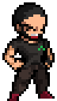

I am what I am today because of your support - Steffan
Cringey StuffSummer 2014 - Research Assistant I had just finished year 2 and had never built an actual application, I was afraid and envious of those who had, but just did not know how to start. I had good grades but I just felt like an imposter who would never be able to be a real software developer. When you brought me in that summer, you guided me along each step, giving me digestable tasks each a big larger than the previous, until finally I had built my first app. Initially, every morning the team met for 'scrum', it was Jarred, Inzamam and I. Jarred and Inzamam belonged to the year before me and were both exceptional, thinking back, the complexity of their problems must have been vastly superior to mine but you never made it seem that way. You always encouraged me and made me feel as if my work was meaningful and complex "the kyle speech". I remember dealing with appengine, at the time it was a toddler and I was a zygote, thank you for having the patience lol. It sounds so cliche and yet understated when I say, the time I spend under you really changed my life; I went from being afraid to attempt to anything to literally believing that everything was easy to build; My freetime went from doing nothing to excitedly prepping for a competition or learning some new thing; At the time my cirlce of friends started to change, either they joined in and started to grow or we drifted; I met some of my greatest (and brightest) friends there; I can't say it enough, the experience, you were life changing.
The many competitions It's difficult to begin because I honestly don't know where to
start. A good place would be my first, Code Jam, but even here, do I say thankyou for guiding
the team during our software development, reviewing our ideas and designs, listening to our
silly qualms, pulling us up if necessary. Or do I start months before during the summer when you
had started consistently trying to convince me to participate. Maybe Agrihack ? The competition
you told Jherez and I about, spent hours with us fleshing out an idea, then driving us to the
competition because we had no idea where were going and how we would have gotten there
otherwise. Or maybe guiding us while we were in Suriname for both.
On behalf of the team, thanks for helping us achieve more than we ever thought we
could have done ourselves

Life in general and random stuff - Can I just say you two are a wealth of knowledge and
patience, thanks for letting me interrupt you both so many times 😭 to ask advice about
studies, work, how-to-pg.
- I am pretty laidback when it comes to everything else besides
work, I gave myself an extremely small window of time to prepare things to go Japan for my conf,
Vani thankyou for saving me 😭, basically providing me a how-to guide on travel, and
hotels, anddddd using your card to pay for my hotel. Fun fact btw, my first online purchases
were with your card & account. Again also for those times, thank you for being so patient with
me. You two made the dept feel welcoming, like a place I (and I suppose other students) could
have returned to and be warmly met (The friendly banter will be missed sooooo much). I will miss
you both.
CSS is annoying (thanks for the fineprint sudesh)
I cannot express how much you have done for me as both a mentor and a friend.
It has been 4 years
now since I started working with you and you have given me alot of advice since then.
I don't
always heed your words right away but I will do you proud with the potential you saw in me.
Thanks
for everything :- Mikkel (And Sidone)
"When things get bad Mikkel all we can do is laugh inno" :- Kyle

This seems kinda lame but when was the last time I wrote HTML? Maybe I should slip in some VBA for Vani
O_o
It's not easy taking the time to listen to problems and provide wise counsel while having your own work
(and lives) but you guys always did. You all never made it seem like a chore either.
We'll definitely link soonish but once again thanks for everything!
(Y'all know I hate CSS so I just copied Mikkel Hayes' code and flipped the colours)
We officially old like the road now bai. I am happy to have been there at the start and now at the end
with you. I deeply appreciate our time together, espically our summer projects. Jammers has been and
will continue to be
life changing for all of us. Guess its about time we start something new. Jammers international
anyone???! You have been and will continue to be an inspiration to us all. The best thing about teaching
is what you can learn from
your students. After you have settled in (and finish PhD) lets start another journey together. All the
best bro! We all love you guys very much!
PS I just copied Sudesh's code. Thanks Coach! :)
I do not think I have ever told you this, but you have significantly influenced the way I present/teach.
I always think about how passionate you are when you talk about all of the things you've worked on and
how lucrative or fun you make any opportunity sound.
The way in which you hype a crowd with your articulate expressions is something I always admire. I look
forward to the next time you use this ability to tell the Trinidad branch of the Jammers of your journey
as a senior software eng in a foreign land.
I hope to see all the pics of all the pups you adopt and take on hikes in Canada!
PS I just copied Kris's code. Thanks bro! :)
And imagine I was gonna go to UWI Mona? Maybe I would have met a Kyle there, who knows? Anyway I'm
really grateful
for these years where I got to know you, first as a lecturer and then on a more personal level. I still
remember
the first time I got invited into that secret backroom, I felt like I had arrived. For me, it was when
you extended that
first offer for the AgriNet summer internship in 2014, that
summer changed me. It opened up new possibilities for me, and it made forced a reevaluation what I could
do. Most importantly,
those interactions sent me down a path of participating in side projects, competitions where we
represented the university
(I'll never forget Suriname) and other nice things that I use to pad my resume to this day 😂.
I've enjoyed our many talks, and your wise sayings, but the thing I appreciated most about you was your
optimism and dedication,
and your ability to inspire. Thank you for being a part of my life and I wish you nothing but blessings
in your future moves.
PS: the birds to come will be okay.
I always reminisce about my time at UWI. I really think that they were the best 4 years of my life. I can say with 100% certainty that you guys are largely responsible for me feeling this way. The opportunities and inspiration you guys provided definitely shaped me as a person. Computer Science @ UWI won't be the same without you. Good luck in Toronto! <3
Kyle, you have impacted my life, and by extension, everyone in so many ways in such a short space of time. Web programming was my first class at UWI, and I will never forget how welcoming and motivational you were. Since then you took us under your wing and inspired us to continuously push ourselves. I am sure that without you, many of us would not have been half the people we currently are today. Beyond the classroom, both you and Vani were amazing friends whom we could always come to when we needed any advice on life or a good hearty laugh. There exists no upperbound on my appreciation for the both of you and what you have done for us all over the years.
I wish both of you the very best!
- Shiva